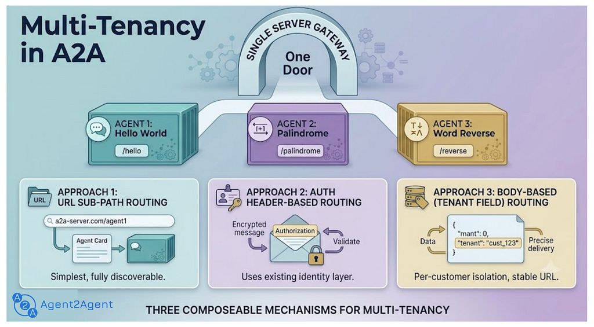
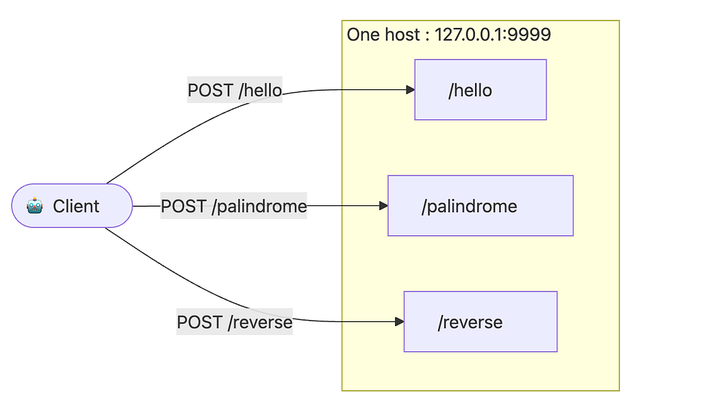
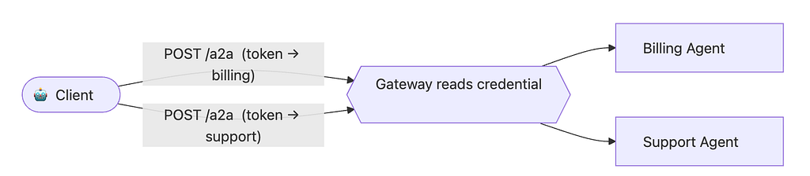
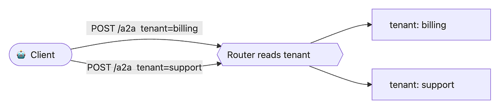

Multi-Tenancy in A2A

A2A Multi-Tenancy: 3 ways to scale your Agentic Apps real fast 🚀1. Introduction
With the launch of the new ADK v2.0 SDK, building and customizing agents has become simpler and easier. But the moment your team ships its second or third agent, an infrastructure question shows up: do we really want a separate hostname or endpoint for every agent — and how do we connect them all?
A quick bit of history: last year Google open-sourced the A2A Protocol (Apache 2.0) to give agents a standard way to talk to each other and collaborate on tasks, then donated it to the Linux Foundation. Over the past year A2A has matured — sharpening the protocol standards, improving the developer experience, and reaching enterprise readiness with the recent A2A v1.0 release.
New to A2A? Here’s the one-line recap: just as MCP is a wrapper over your tools and services, A2A is a wrapper over your agents — both bring portability, simplicity, and scalability to agentic systems.
One of A2A’s newer features is multi-tenancy. Now that building agents is easy, multi-tenancy lets you host multiple independent agents (agentic apps) under a single system. Each app shares the same A2A server but is reachable at its own URL endpoint — and, just like a standalone A2A app, each keeps its own Agent Card, Agent Skills, communication standard, and the rest of the A2A features.
To show it off, this post walks through three ways to build multi-tenant applications in A2A , then builds a small interactive demo that shows how multi-tenancy makes agentic apps easy to build and scale.
2. What you’ll learn
By the end of this post, you’ll walk away with:
- What A2A multi-tenancy is — many independent agents behind one server, each reachable at its own endpoint.
- The three ways to route a request to the right agent — and a rule of thumb for when to reach for each.
- Why it stays simple — routing config lives in each agent’s Agent Card, so clients don’t hard-code anything.
- How to build it — a small, runnable demo: one server hosting three agents, and one interactive client that discovers and talks to them.
3. Three ways to add multi-tenancy
A2A is deliberately unopinionated about routing. It doesn’t prescribe an implementation; it gives you three composable mechanisms , and routing config always lives in the Agent Card — so your clients stay simple and your topology stays discoverable.
Approach 1 — URL sub-path routing
Give each agent its own URL prefix, and let each Agent Card advertise that URL. Clients need no special awareness — they read the card and send requests where it points. (This is the approach our demo uses.)

A2A Multi-tenancy with URL sub-path routing👉 Tip: Use this when you have a small, fixed set of agents and want the setup that’s easiest to build, scale and debug — the route shows up right in your access log.
Approach 2 — Authentication header-based routing
When several agents share the same URL, a gateway can route based on the credential already in the request. Because A2A declares auth requirements in the Agent Card (securitySchemes / securityRequirements), this stays fully discoverable — and the A2A message itself is never modified.

A2A Multi-tenancy with header-based routingCommon patterns: a bearer token whose claims (audience, scope) identify the target agent, or an API key the gateway maps to a particular agent.
👉 Tip: Use this when you already have solid auth (+ access) management and want routing to come for free from it. Every agent shares one URL, your routing layout isn’t exposed.
Approach 3 — Body-based routing with the tenant field
Every A2A request can carry an optional tenant field — an opaque string. The protocol imposes no format or meaning; the value is whatever the server operator decides (an agent id, a workspace slug, an org id). The value a client should send is advertised on the agent's AgentInterface.
The one rule you must not break: the client MUST echo the tenant value from the selected AgentInterface back in every request message. If the interface doesn't set tenant, the field MUST be omitted. (This is the normative client rule in spec §8.3.2.)

A2A Multi-tenancy with tenant field👉 Tip: Use this when you want a single URL and give options to the client to select the routing direction.
Bringing it all together
These aren’t mutually exclusive. A realistic large deployment might use sub-path routing to separate major product lines and the tenant field to separate individual customers within each line — while header-based routing quietly handles auth the whole time. The right combination depends on your gateway and architecture, not on the protocol.
And it all rides on discovery: when several agents live behind a shared domain, each agent publishes its own Agent Card. Clients fetch each card independently and use its supportedInterfaces data — including any tenant value — to reach the right agent. Get the cards right, and the routing takes care of itself.
4. Building the demo app
To make this concrete, we’ll stand up three agents behind one host and talk to each of them — using Approach 1 (URL sub-paths).
Sub-pathAgentWhat it does/helloHello World AgentReplies with a friendly hello/palindromePalindrome AgentSays whether your text is a palindrome/reverseWord Reverse AgentReverses the order of the words in your text
These three are intentionally trivial echo-style mocks — the focus is on routing, not on what the agents do. (We also drop the authenticated “extended” Agent Card; each agent has a single, public card so the example stays about routing.)
How it works
- server.py starts one Starlette/uvicorn server and, in a short loop, mounts each agent's Agent Card + JSON-RPC endpoint on its own sub-path. Every agent shares one small AgentExecutor parameterized by a plain text -> text function — so adding a fourth agent is a one-liner.
- client.py hard-codes nothing. It fetches each agent's Agent Card (discovery), shows a menu, prints an "about this agent" summary from the card (endpoint, protocol, input/output formats, skills), then sends your messages to the agent you picked. An empty message exits.
Run it
pip install "a2a-sdk>=1.0.3" uvicorn starlette httpx
python a2a_server.py # serves all three agents on :9999
python a2a_client.py # in another terminal (add --mode stream to stream)
The code
a2a_server.py — hosts the three agents on sub-paths:
"""a2a_server.py -- Multi-tenancy demo: three A2A agents behind ONE host.
Companion to the "A2A Multi-Tenancy" blog post. Run it, then run a2a_client.py.
pip install "a2a-sdk>=1.0.3" uvicorn starlette httpx
python a2a_server.py
It hosts three tiny "echo-style" agents, each on its own URL sub-path:
http://127.0.0.1:9999/hello -> Hello World agent (says hello)
http://127.0.0.1:9999/palindrome -> Palindrome agent (is it a palindrome?)
http://127.0.0.1:9999/reverse -> Word-reverse agent (reverses word order)
Each agent publishes its own Agent Card at <sub-path>/.well-known/agent-card.json,
so a client just reads the card and sends requests where it points.
"""
import os
from collections.abc import Callable
import uvicorn
from a2a.helpers import (
get_message_text,
new_task_from_user_message,
new_text_message,
new_text_part,
)
from a2a.server.agent_execution import AgentExecutor, RequestContext
from a2a.server.events import EventQueue
from a2a.server.request_handlers import DefaultRequestHandler
from a2a.server.routes import create_agent_card_routes, create_jsonrpc_routes
from a2a.server.tasks import InMemoryTaskStore, TaskUpdater
from a2a.types import AgentCapabilities, AgentCard, AgentInterface, AgentSkill
from a2a.types.a2a_pb2 import TaskState
from a2a.utils.constants import AGENT_CARD_WELL_KNOWN_PATH
from starlette.applications import Starlette
BIND_HOST = os.environ.get("A2A_BIND_HOST", "127.0.0.1")
PORT = int(os.environ.get("A2A_PORT", "9999"))
PUBLIC_URL = os.environ.get("A2A_PUBLIC_URL", f"http://127.0.0.1:{PORT}")
# --- The three agent "brains": trivial text -> text functions. ---
def hello_world(text: str) -> str:
"""Classic hello-world echo."""
return f'Hello, World! You said: "{text}"'
def palindrome(text: str) -> str:
"""Report whether the input reads the same forwards and backwards."""
cleaned = "".join(ch.lower() for ch in text if ch.isalnum())
if not cleaned:
return "Send me some text and I will check if it is a palindrome."
verdict = "is" if cleaned == cleaned[::-1] else "is not"
return f'"{text}" {verdict} a palindrome.'
def reverse_words(text: str) -> str:
"""Reverse the order of the words in the input."""
if not text.strip():
return "Send me a sentence and I will reverse the word order."
return f'Reversed: {" ".join(reversed(text.split()))}'
# --- One small AgentExecutor, parameterized by a transform function. ---
class SimpleAgentExecutor(AgentExecutor):
"""Runs one text -> text transform; A2A does the rest of the work."""
def __init__(self, transform: Callable[[str], str]) -> None:
self.transform = transform
async def execute(self, context: RequestContext, event_queue: EventQueue) -> None:
"""Process user request."""
# 1. Collect a task from the request context.
if context.current_task:
task = context.current_task
else:
# 1.1 If there is no task, create one and add it to the event queue.
task = new_task_from_user_message(context.message)
await event_queue.enqueue_event(task)
# 2. Update task status in the EventQueue using a TaskUpdater object.
updater = TaskUpdater(
event_queue=event_queue, task_id=task.id, context_id=task.context_id
)
await updater.update_status(
state=TaskState.TASK_STATE_WORKING,
message=new_text_message("Working on it..."),
)
# 3. Collect the user's text and run this tenant's transform on it.
query = get_message_text(context.message)
result = self.transform(query) if query else "No text input was provided!"
# 4. Add the generated response as an artifact to the EventQueue.
await updater.add_artifact(
parts=[new_text_part(text=result, media_type="text/plain")]
)
# 5. Mark the task completed.
await updater.update_status(
state=TaskState.TASK_STATE_COMPLETED,
message=new_text_message("Done!"),
)
async def cancel(self, context: RequestContext, event_queue: EventQueue) -> None:
"""Raise exception as cancel is not supported."""
raise NotImplementedError("Cancel is not supported.")
def build_card( # noqa: PLR0913 - demo helper: one clear arg per card field
path: str,
name: str,
description: str,
skill_id: str,
skill_name: str,
examples: list[str],
) -> AgentCard:
"""Each agent advertises its OWN card, pointing at its OWN sub-path."""
return AgentCard(
# Basic identity information for this tenant's A2A server.
name=name,
description=description,
version="1.0.0",
# Default media types for the agent's interactions.
default_input_modes=["text/plain"],
default_output_modes=["text/plain"],
# Supported A2A features (here, streaming responses).
capabilities=AgentCapabilities(streaming=True),
# The endpoint(s) where this agent can be reached. This is the heart of
# sub-path routing: each card points clients at its own URL prefix.
supported_interfaces=[
AgentInterface(
protocol_binding="JSONRPC",
url=f"{PUBLIC_URL}{path}",
protocol_version="1.0",
)
],
# The list of AgentSkill objects this agent offers.
skills=[
AgentSkill(
id=skill_id,
name=skill_name,
description=description,
input_modes=["text/plain"],
output_modes=["text/plain"],
tags=["a2a", "echo-example", "multi-tenancy"],
examples=examples,
)
],
)
# One (sub-path, card, executor) entry per tenant agent.
AGENTS = [
(
"/hello",
build_card(
"/hello",
"Hello World Agent",
"Replies with a friendly hello.",
"hello",
"Say hello",
["hi", "hello there"],
),
SimpleAgentExecutor(hello_world),
),
(
"/palindrome",
build_card(
"/palindrome",
"Palindrome Agent",
"Tells you whether your text is a palindrome.",
"palindrome",
"Palindrome check",
["racecar", "hello"],
),
SimpleAgentExecutor(palindrome),
),
(
"/reverse",
build_card(
"/reverse",
"Word Reverse Agent",
"Reverses the order of the words in your text.",
"reverse",
"Reverse words",
["hello world", "agents talking to agents"],
),
SimpleAgentExecutor(reverse_words),
),
]
def build_app() -> Starlette:
"""Mount each agent's card + JSON-RPC endpoint on its own sub-path."""
routes = []
for path, card, executor in AGENTS:
# The RequestHandler processes incoming requests and manages tasks for
# this one tenant, backed by its own in-memory task store.
handler = DefaultRequestHandler(
agent_executor=executor,
task_store=InMemoryTaskStore(),
agent_card=card,
)
# Publish this agent's Agent Card under <sub-path>/.well-known/... so
# clients can discover it independently of the other tenants.
routes.extend(
create_agent_card_routes(
card, card_url=f"{path}{AGENT_CARD_WELL_KNOWN_PATH}"
)
)
# Mount this agent's JSON-RPC endpoint on its own sub-path.
routes.extend(create_jsonrpc_routes(handler, rpc_url=path))
# A single Starlette app fronts all three agents on one host/port.
return Starlette(routes=routes)
if __name__ == " __main__":
print(f"Serving three A2A agents (bind {BIND_HOST}:{PORT}, public {PUBLIC_URL}):")
for sub_path, agent_card, _ in AGENTS:
print(f" {PUBLIC_URL}{sub_path} -> {agent_card.name}")
uvicorn.run(build_app(), host=BIND_HOST, port=PORT)
a2a_client.py — discovers the agents and chats with your pick:
"""a2a_client.py -- Interactive client for the multi-tenancy demo (a2a_server.py).
Companion to the "A2A Multi-Tenancy" blog post.
pip install "a2a-sdk>=1.0.3" httpx
python a2a_server.py # in one terminal
python a2a_client.py # in another (non-streaming, default)
python a2a_client.py --mode stream # streaming replies
Flow:
1. The client discovers the agents the server hosts (one Agent Card each).
2. It prints a menu -- press 1, 2 or 3 to pick which agent to connect to.
3. Type a message; the chosen agent replies (hello / palindrome / word-reverse).
4. Press Enter on an empty message to exit.
The only CLI option is --mode, which selects how replies are received:
--mode message non-streaming: one reply per message (default)
--mode stream streaming: events arrive as the agent works
"""
import argparse
import asyncio
import os
from collections.abc import Iterable
import httpx
from a2a.client import A2ACardResolver, ClientConfig, create_client
from a2a.helpers import get_message_text, new_text_message
from a2a.types import AgentCard
from a2a.types.a2a_pb2 import Artifact, Role, SendMessageRequest, StreamResponse
PORT = int(os.environ.get("A2A_PORT", "9999"))
BASE_URL = f"http://127.0.0.1:{PORT}"
# The sub-paths a2a_server.py exposes, in menu order.
AGENT_PATHS = ["/hello", "/palindrome", "/reverse"]
def _print_artifacts(artifacts: Iterable[Artifact]) -> None:
for artifact in artifacts:
for part in artifact.parts:
if part.text:
print(f"agent > {part.text}")
def print_reply(event: StreamResponse) -> None:
"""Print the human-readable reply from a StreamResponse (either mode)."""
kind = event.WhichOneof("payload")
if kind == "task": # non-streaming: full task
_print_artifacts(event.task.artifacts)
elif kind == "artifact_update": # streaming: the result chunk(s)
_print_artifacts([event.artifact_update.artifact])
elif kind == "message":
print(f"agent > {get_message_text(event.message)}")
# 'status_update' (working/completed) is progress noise -- ignored here.
async def discover_agents(
http: httpx.AsyncClient,
) -> list[tuple[str, AgentCard]]:
"""Fetch each agent's card from its own sub-path."""
found: list[tuple[str, AgentCard]] = []
for path in AGENT_PATHS:
# A2ACardResolver reads the Agent Card from <base_url>/.well-known/...
# Because each tenant has its own sub-path, we resolve one card per path.
resolver = A2ACardResolver(httpx_client=http, base_url=f"{BASE_URL}{path}")
try:
card = await resolver.get_agent_card()
found.append((path, card))
except Exception as exc: # noqa: BLE001 - demo: show why an agent is skipped
print(f"(skipping {path}: {exc})")
return found
def choose_agent(
agents: list[tuple[str, AgentCard]],
) -> tuple[str, AgentCard] | None:
"""Print the menu and return the (path, card) the user picks, or None."""
print("\nWhich A2A agent do you want to connect to?")
for i, (path, card) in enumerate(agents, start=1):
print(f" {i}. {card.name} ({BASE_URL}{path}) - {card.description}")
choice = input("Select 1, 2 or 3 (Enter to quit): ").strip()
if not choice:
return None
if choice.isdigit():
idx = int(choice) - 1
if 0 <= idx < len(agents):
return agents[idx]
print("Invalid choice.")
return None
# Friendly labels for the Agent Card's protocol binding.
PROTOCOL_LABELS = {
"JSONRPC": "JSON-RPC over HTTP",
"HTTP+JSON": "HTTP + JSON",
"GRPC": "gRPC",
}
def describe_agent(card: AgentCard) -> None:
"""Print a short, friendly summary built from the agent's Agent Card."""
iface = card.supported_interfaces[0] if card.supported_interfaces else None
protocol = (
PROTOCOL_LABELS.get(iface.protocol_binding, iface.protocol_binding)
if iface
else "unknown"
)
endpoint = iface.url if iface else "n/a"
inputs = ", ".join(card.default_input_modes) or "text"
outputs = ", ".join(card.default_output_modes) or "text"
skills = ", ".join(skill.name for skill in card.skills) or "-"
print(f"\nYou're connected to the {card.name}.")
print(f" {card.description}")
print(" --- from its Agent Card ---")
print(f" - Endpoint : {endpoint}")
print(f" - Protocol : {protocol}")
print(f" - Format : {inputs} in -> {outputs} out")
print(f" - Skills : {skills}")
async def main(mode: str) -> None:
"""Discover the agents, let the user pick one, and chat with it."""
async with httpx.AsyncClient() as http:
agents = await discover_agents(http)
if not agents:
print("No agents reachable. Is a2a_server.py running?")
return
picked = choose_agent(agents)
if not picked:
print("Bye!")
return
_path, card = picked
# Build a client for the chosen agent. The card carries the endpoint, so
# the client knows where to send requests; streaming is toggled by --mode.
client = await create_client(
agent=card,
client_config=ClientConfig(streaming=(mode == "stream")),
)
describe_agent(card)
print("\nType a message (empty to exit).")
try:
while True:
# input() is blocking, so run it off the event loop.
text = (await asyncio.to_thread(input, "you > ")).strip()
if not text: # empty message -> exit
print("Bye!")
break
# Wrap the user's text in an A2A message and send it. Replies are
# streamed back as events, which print_reply renders per mode.
request = SendMessageRequest(
message=new_text_message(text, role=Role.ROLE_USER)
)
async for event in client.send_message(request):
print_reply(event)
finally:
# Always close the client to release the underlying HTTP connection.
await client.close()
if __name__ == " __main__":
parser = argparse.ArgumentParser(
description="Interactive A2A multi-tenancy client."
)
parser.add_argument(
"--mode",
choices=["message", "stream"],
default="message",
help="how replies are received: 'message' (non-streaming, default) or 'stream' (streaming)",
)
args = parser.parse_args()
asyncio.run(main(args.mode))
See it in action
5. Takeaways & resources
Takeaways
- Infrastructure Efficiency: Hosting many agents behind one host requires a small loop, not a massive rewrite. One shared server, with logically separate endpoints.
- Flexible Routing: A2A gives you three routing primitives — sub-path, auth header, and the tenant field. You can compose them to fit your exact gateway needs.
- Decentralized Config: Routing config lives in the Agent Card. Clients stay simple and your topology stays discoverable without hard-coded URLs.
- The Single Client Rule: Always echo the tenant field when the interface sets it; omit it when it doesn’t.
Resources to get started
- Multi-tenancy guide: https://a2a-protocol.org/latest/topics/multi-tenancy/
- A2A spec & docs: https://a2a-protocol.org/latest/
- A2A on GitHub (⭐): https://github.com/a2aproject/A2A
- Hello-world sample: a2a-samples/samples/python/agents/helloworld
A question for you: when you put several agents behind one host, do you reach for sub-paths, auth, or the tenant field first — and why?
#A2A #AIAgents #MultiAgent #Python #PlatformEngineering